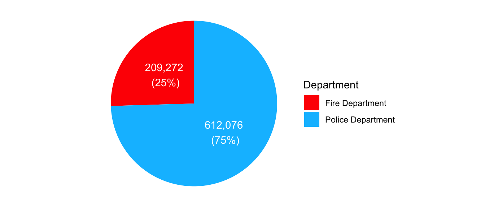

| Dataset Name | Citywide Payroll Data (Fiscal Year) |
| Provided by | Office of Payroll Administration (OPA) |
| Data Category | City Government |
| Frequency of Updates | Annually |
| Date Created | October 31, 2015 |
| Data Last Updated | October 30, 2024 |
| Dimensions | 6,225,611 rows and 17 columns |
| Each row represents | City Employee Salary per Fiscal Year |
| Source URL | https://data.cityofnewyork.us/ |
2 Data
For this project, we will be using a subset of the Citywide Payroll Data.
This dataset is available via NYC OpenData and provided by the Office of Payroll Administration (OPA).
- Fire Department
- Police Department
First, we will examine the metadata of the entire dataset, followed by an analysis of missing values to identify any potential issues that may impact our analysis. Finally, we will outline the decision-making process for selecting a subset of the data.
2.1 Description
Data Metadata
Data Format
| Column Name | Description | Data Type |
|---|---|---|
| Fiscal Year | Fiscal Year | Number |
| Payroll Number | Payroll Number | Number |
| Agency Name | The Payroll agency that the employee works for | Text |
| Last Name | Last name of employee | Text |
| First Name | First name of employee | Text |
| Mid Init | Middle initial of employee | Text |
| Agency Start Date | Date which employee began working for their current agency | Timestamp |
| Work Location Borough | Borough of employee's primary work location | Text |
| Title Description | Civil service title description of the employee | Text |
| Leave Status as of June 30 | Status of employee as of the close of the relevant fiscal year: Active, Ceased, or On Leave | Text |
| Base Salary | Base Salary assigned to the employee | Number |
| Pay Basis | Lists whether the employee is paid on an hourly, per diem or annual basis | Text |
| Regular Hours | Number of regular hours employee worked in the fiscal year | Number |
| Regular Gross Paid | The amount paid to the employee for base salary during the fiscal year | Number |
| OT Hours | Overtime Hours worked by employee in the fiscal year | Number |
| Total OT Paid | Total overtime pay paid to the employee in the fiscal year | Number |
| Total Other Pay | Includes any compensation in addition to gross salary and overtime pay, i.e., Differentials, lump sums, uniform allowance, meal allowance, retroactive pay increases, settlement amounts, and bonus pay, if applicable. | Number |
Importing the data
From this URL, you can click the button ‘Export’, and then select Download File-CSV format (All data 6225611 rows). This will download a file of about 840MB. Remember, we are using the data Last Updated on October 30, 2024.
The file will be downloaded with the name: Citywide_Payroll_Data__Fiscal_Year__YYYYMMDD.csv(YYYYMMDD refers to the date that you downloaded the file)
Once the data was downloaded, it was added to a new folder inside the repository called ‘data_source’.
2.2 Missing value analysis
Missing value stuff goes here.
2.3 Understanding the raw data
Note any issues / problems with the data, either known or that you discover.
2.4 Deciding on final data subset
Based on the analysis above, we will add a few filter to reduce and clean the dataset.
Filters applied to the dataset:
| Column Name | Filter |
|---|---|
| Fiscal Year | From 2015 to 2024 |
| Agency Name | FIRE DEPARTMENT, POLICE DEPARTMENT |
| Pay Basis | per Annum, per Day, per Hour |
Size of Final subset Data
| Dimensions | 821,348 rows and 17 columns |
| Each row represents | City Employee Salary per Fiscal Year |
Record count by Department:
Code
library(ggplot2)
library(tibble)
library(dplyr)
# Create a dataframe with the data
data <- tibble(
Department = c("Fire Department", "Police Department"),
Count = c(209272, 612076),
Color = c("red", "blue")
)
# Calculate percentages for each department
data <- data %>%
mutate(Percentage = Count / sum(Count) * 100,
Label = paste(
# Department, "\n",
format(Count, big.mark = ","), "\n", " (", sprintf("%.0f", Percentage), "%)", sep = ""))
# Create the pie chart using ggplot2
ggplot(data, aes(x = "", y = Count, fill = Department)) +
geom_bar(stat = "identity", width = 1) +
coord_polar(theta = "y") +
scale_fill_manual(values = c("red", "deepskyblue")) +
# labs(title = "Record Count by Department") +
theme_void() +
# theme(legend.position = "none") + # Remove the legend if you don't want it
geom_text(aes(label = Label), position = position_stack(vjust = 0.5), color = "white")
Overall dataset Information:
| Metrics | Fire Deparmtnet | Police Department |
|---|---|---|
| Count of Records | 209272 | 612076 |
| Fiscal Years | 10 years (2015-2024) | 10 years (2015-2024) |
| Agency Start Date Range | 1968-04-22 to 2024-07-29 | 1960-11-14 to 2049-10-16 |
| Work Location Borough | 5 | 5 |
| Title Description | 100 | 200 |
Note
Instruction
2 Data data.qmd
2.1 Technical description
Identify one or more data sources (see II. D. above) that you propose to draw on for the project. For each, describe how the data are collected and by whom. Describe the format of the data, the frequency of updates, dimensions, and any other relevant information. Note any issues / problems with the data, either known or that you discover. Explain how you plan to import the data. Carefully document your sources with links to the precise data sources that you used. If that is not possible (for example if your data is not available online, then explain that clearly.)
(suggested: 1/2 page) 250-500 words
2.2 Missing value analysis
Describe any patterns you discover in missing values. If no values are missing, graphs should still be included showing that.
(suggested: 2 graphs plus commentary)